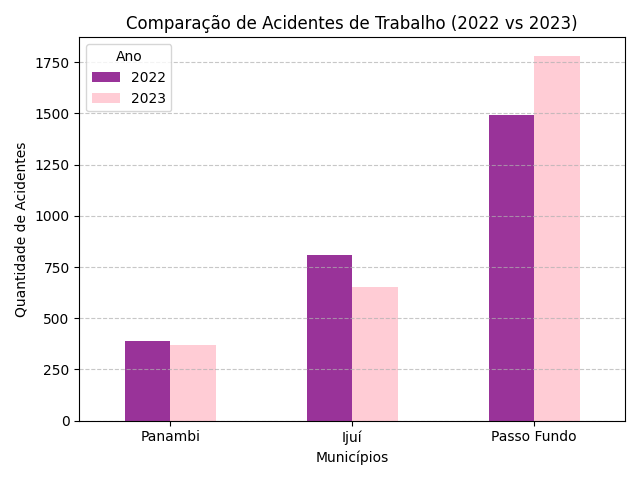
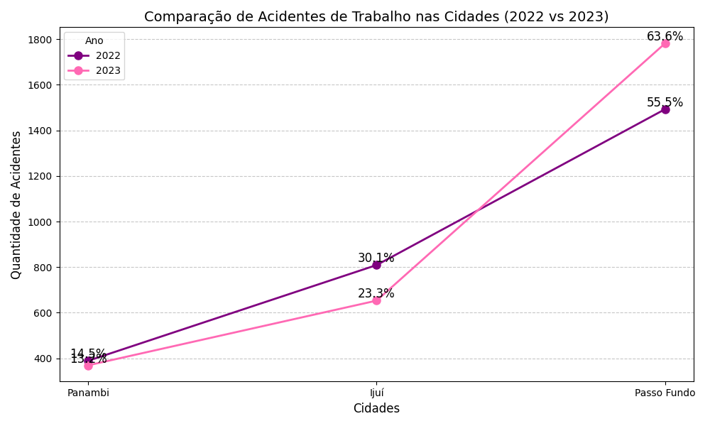
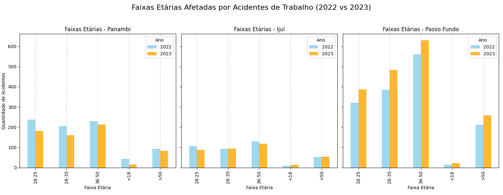
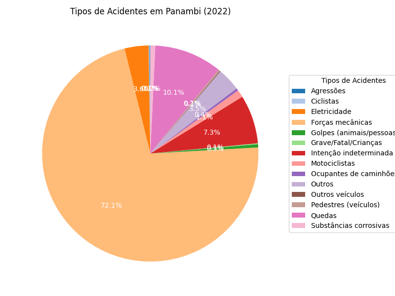
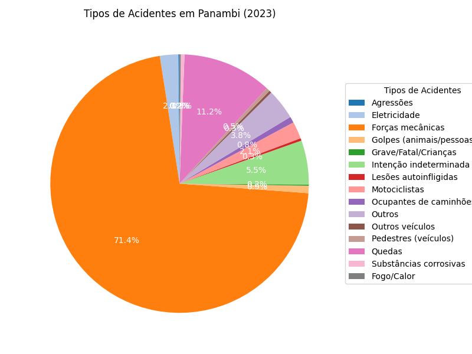
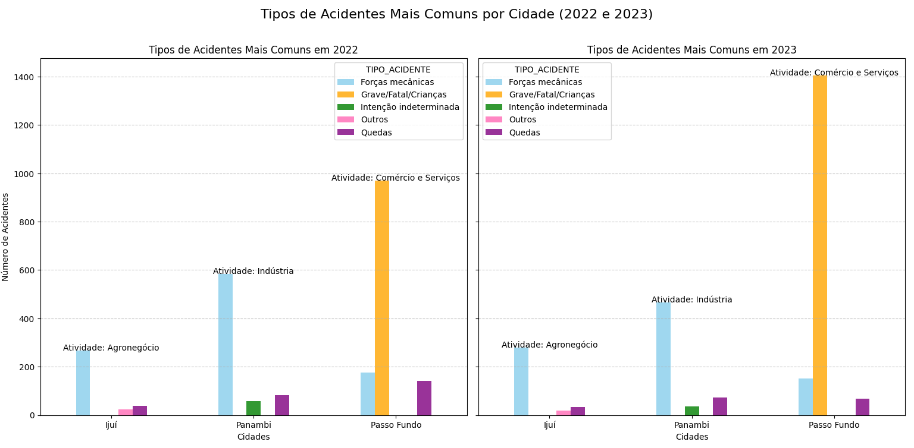
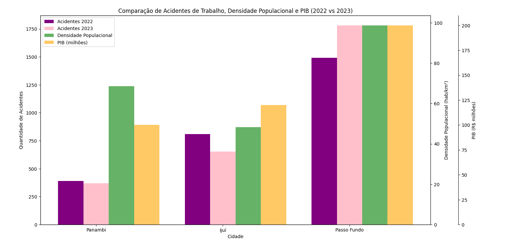

Comparação entre a quantidade de acidentes em 2022 e 2023

Comparação entre a quantidade de acidentes nas cidades

Comparação entre a faixa etária afetada

Acidentes mais comuns em Ijuí


Acidentes mais comuns em Panambi


Acidentes mais comuns em Passo Fundo


Comparação de acidentes mais comuns entre as três cidades e foco econômico

Comparação da quantidade de acidentes com densidade demográfica e PIB
